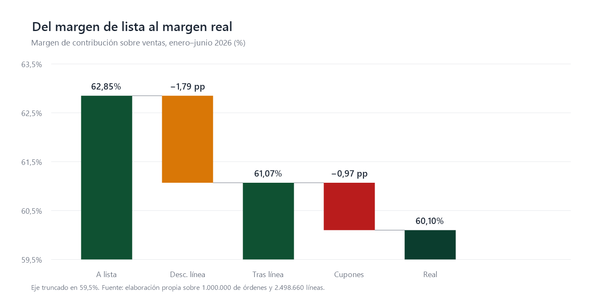
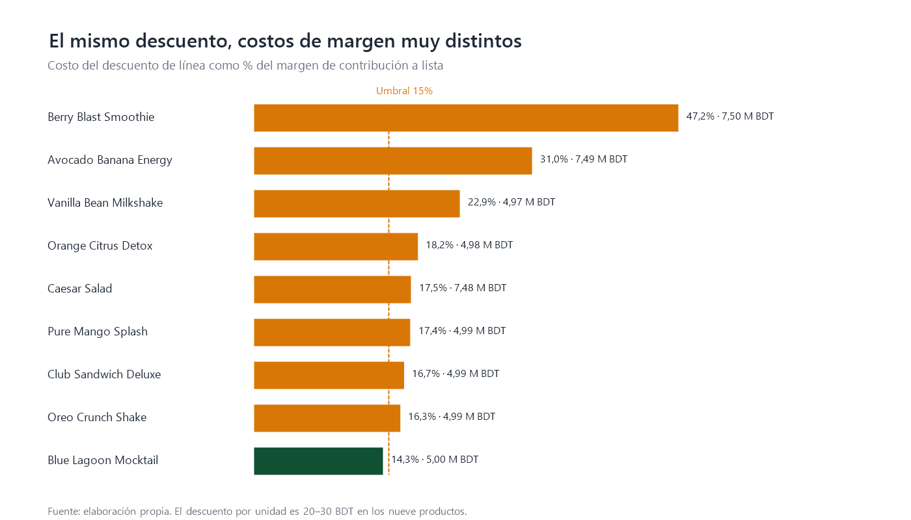
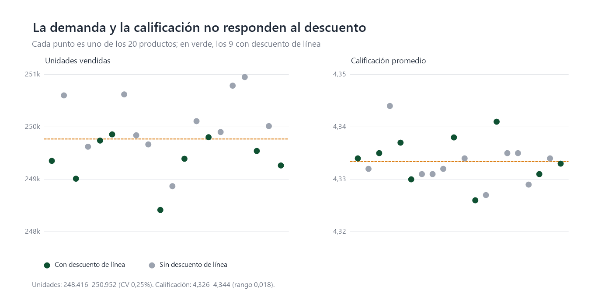
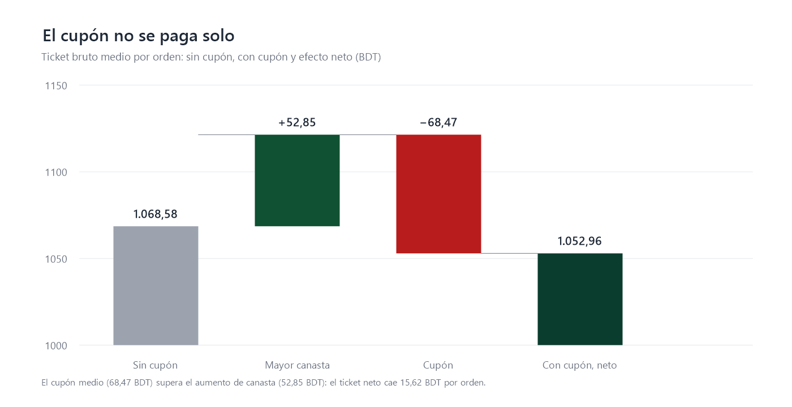

Juice Corner BD · Fase 1 NEW · Documento de investigación
Fase 1 NEW.
Descuentos y cupones
Impacto en el margen de contribución por producto y separación del efecto del costo de receta — Juice Corner BD, enero–junio 2026
Juice Corner BD dedica 78,84 millones de BDT —el 6,91% de sus ventas brutas y el 10,99% del margen que genera su carta a precio de lista— a descuentos de línea y cupones. En esos mismos cinco meses vende prácticamente las mismas unidades de sus 20 productos y recibe la misma calificación con descuento que sin descuento. Esta Fase 1 NEW fija el problema, la pregunta y un objetivo SMART para decidir qué descuentos mantener, limitar o eliminar sin perder volumen ni satisfacción.
78,84 M costo promocional en cinco meses | 60,10% margen de contribución real (62,85% a lista) | 0,25% variación de unidades entre productos | 4,3334 calificación promedio, igual con y sin descuento |
[[TOC]]
Juice Corner BD es una cadena de jugos, batidos y snacks con tres sucursales en Dhaka, Bangladesh. Vende en local y por delivery, cobra en taka bangladesí (BDT) y maneja una carta corta de 20 productos. La información de este proyecto sale del dataset Restaurant & Food Delivery Relational Database de Kaggle, descrito por su autor como una base OLTP SQL completa de ventas y operaciones de un restaurante multisucursal.
La base cubre del 11 de enero al 21 de junio de 2026 (162 días) y tiene más de 40 tablas. Para este nuevo enfoque importan tres que la Fase 1 original no explotaba: products.discounted_price, que revela que el descuento de línea es un precio permanente y no una promoción temporal; coupon_redemptions, que registra el costo real de cada cupón; y reviews, que permite medir la calificación por producto y por orden.
Tabla 1. Volúmenes principales de la base (enero–junio de 2026)
| Tabla | Registros | Qué guarda |
|---|---|---|
| orders | 1.000.000 | Una fila por orden: fecha, sucursal, cliente, tipo, cupón, subtotal y descuentos. |
| order_items | 2.498.660 | Líneas de pedido: producto, cantidad, precio unitario, descuento de línea y subtotal. |
| coupon_redemptions | 386.527 | Canje de cupón por orden: cupón, cliente, monto descontado y fecha. |
| reviews | 748.743 | Reseña por producto y orden: calificación de 3 a 5 estrellas y comentario. |
| products | 20 | Carta: precio de lista y precio con descuento permanente. |
| coupons | 6 | Catálogo: tipo, valor, mínimo de compra y vigencia. |
| customers | 5.000 | Clientes registrados. |
| branches | 3 | Sucursales. |
Fuente: elaboración propia sobre Restaurant & Food Delivery Relational Database (Kaggle, autor thesohanur).
Eso da unas 6.211 órdenes diarias y 2,5 líneas por orden en promedio. Es una base transaccional, pensada para operar y no para analizar; por eso la Fase 2 la convierte en un esquema estrella con grano de línea de pedido y una tabla puente para prorratear los cupones.
Una precisión sobre las cifras de la Fase 1 original: su margen global de 61,1% y su costo de descuentos de 7,24% del subtotal neto se mantienen. La diferencia es que ahora se descomponen. El 61,1% es el margen después del descuento de línea; al restar también los cupones baja a 60,10%, y a precio de lista sería 62,85%. Esa separación es la que permite ver cuánto del margen se pierde por el costo de la receta y cuánto por la política de descuentos.
La exploración deja seis hechos que, juntos, explican por qué el gasto promocional no se traduce en margen. No son opiniones: salen de recorrer las 2.498.660 líneas, las 1.000.000 de órdenes y las 748.743 reseñas.
El primero es un descuento de línea que aplica a 9 de los 20 productos, con tasas de 6,67% a 11,11%, y que aparece en el 73,62% de las órdenes. El segundo es un cupón que usa el 38,65% de las órdenes y que se descuenta del total, no de un producto. Los dos suman 78,84 millones de BDT en cinco meses: 52,38 millones de línea (66,4%) y 26,47 millones de cupones (33,6%).
El gasto es notablemente estable. Cada mes, entre 38,53% y 38,83% de las órdenes lleva cupón, y el costo promocional se queda entre 7,23% y 7,25% del subtotal neto. Esa estabilidad no es un logro de gestión: es la firma de una asignación uniforme que no reacciona al margen, al producto ni a la ocasión.
Tabla 2. Composición del costo promocional
| Componente | Cobertura | Costo (M BDT) | % del costo total | % de ventas brutas |
|---|---|---|---|---|
| Descuento de línea | 9 productos; 73,62% de las órdenes | 52,38 | 66,4% | 4,59% |
| Cupones | 38,65% de las órdenes | 26,47 | 33,6% | 2,32% |
| Total | — | 78,84 | 100,0% | 6,91% |
El costo de cupones se reconcilia con coupon_redemptions: 386.527 canjes y 26.467.393,51 BDT. La suma de línea y cupón es 78.843.703,51 BDT.

Figura 1. Puente del margen de contribución: 62,85% a lista, 61,07% después del descuento de línea y 60,10% después de cupones. Eje truncado en 59,5% para hacer visible la brecha.
En los 162 días del periodo, ninguno de los 9 productos cambia su tasa de descuento. La tasa es exactamente la que resulta de comparar products.price con products.discounted_price. No hay semanas sin descuento, ni picos en campañas, ni variación por sucursal. El descuento de línea es, en la práctica, el precio de góndola; el precio de lista es un precio nominal.
Esto tiene dos consecuencias para el proyecto. Primero, eliminar un descuento de línea no es terminar una promoción: es subir el precio de ese producto, con el riesgo comercial que eso implica. Segundo, como no hay variación temporal, el histórico no permite estimar la elasticidad. Cualquier conclusión causal exige un piloto o un supuesto explícito; la Fase 1 no supone elasticidad, la convierte en umbral de equilibrio.
Los nueve descuentos de línea valen entre 20 y 30 BDT por unidad. En términos absolutos son casi el mismo gesto comercial. En términos de margen no lo son: el descuento consume 14,34% del margen de contribución a lista de Blue Lagoon Mocktail y 47,24% del de Berry Blast Smoothie. La razón está en la receta: el costo de ingredientes va de 5,83% del precio en Blue Lagoon a 85,62% en Strawberry Cream Shake.
La relación es exacta y se puede escribir: la caída de margen en puntos porcentuales es (1 − margen de lista) × d / (1 − d), donde d es la tasa de descuento. En Berry Blast, 74,5% de costo de receta y 10% de descuento implican 8,28 puntos de margen; en Blue Lagoon, 5,83% de receta y 11,11% de descuento implican 0,73 puntos. El cupón añade después unos 2,4% de la venta neta a todos los productos, porque se prorratea por venta.

Figura 2. Costo del descuento de línea como porcentaje del margen de contribución a lista. Ocho de los nueve descuentos superan el umbral de 15%; el más caro consume casi la mitad del margen de Berry Blast.
Tabla 3. Los nueve descuentos de línea y su costo de margen
| Producto | Precio (BDT) | Costo receta (BDT) | Tasa línea | Costo línea / CM lista | Margen a lista | Margen real | Calificación |
|---|---|---|---|---|---|---|---|
| Berry Blast Smoothie | 300 | 223,50 | 10,00% | 47,2% | 25,50% | 15,30% | 4,330 |
| Avocado Banana Energy | 280 | 164,00 | 10,71% | 31,0% | 41,43% | 32,81% | 4,337 |
| Vanilla Bean Milkshake | 200 | 92,50 | 10,00% | 22,9% | 53,75% | 47,26% | 4,338 |
| Orange Citrus Detox | 200 | 65,00 | 10,00% | 18,2% | 67,50% | 62,94% | 4,335 |
| Caesar Salad with Chicken | 320 | 112,00 | 9,38% | 17,5% | 65,00% | 60,52% | 4,333 |
| Pure Mango Splash | 180 | 40,60 | 11,11% | 17,4% | 77,44% | 73,94% | 4,334 |
| Club Sandwich Deluxe | 300 | 143,00 | 6,67% | 16,7% | 52,33% | 47,77% | 4,331 |
| Oreo Crunch Shake | 250 | 92,50 | 8,00% | 16,3% | 63,00% | 58,77% | 4,326 |
| Blue Lagoon Mocktail | 180 | 10,50 | 11,11% | 14,3% | 94,17% | 93,26% | 4,341 |
El margen real descuenta además el cupón prorrateado (2,2%–2,7% de la venta neta). El descuento por unidad es 20 BDT en seis productos y 30 BDT en tres.
Los seis cupones se reparten casi por igual: cada uno aparece en 6,41% a 6,48% de las órdenes. No hay un cupón para clientes nuevos, otro para clientes de alto valor y otro para un producto específico que se comporten distinto en los datos. El cupón se aplica a la orden completa, no al producto, y se prorratea por venta: cada producto termina soportando entre 2,2% y 2,7% de su venta neta en cupones. Es un impuesto uniforme, no una palanca para mover la mezcla.
Los descuentos de línea tampoco siguen una lógica de protección del margen. El producto de menor margen (Strawberry Cream Shake, 14,38%) no tiene descuento; el de mayor margen (Blue Lagoon Mocktail, 94,17%) tiene la tasa más alta, 11,11%. Entre los nueve productos descontados, la correlación entre tasa y margen de lista es +0,26: se descuenta más donde más margen hay para ceder. Eso puede ser una decisión comercial defendible si el descuento compra volumen, pero los datos no muestran que lo compre.
Los 20 productos venden entre 248.416 y 250.952 unidades en el periodo. La variación es de 1,02% entre el mínimo y el máximo, y el coeficiente de variación es 0,25%. Los 9 productos con descuento venden en promedio 249.376 unidades; los 11 sin descuento, 250.090. La diferencia es de 0,29% y va en la dirección contraria a la que se esperaría si el descuento estimulara la demanda.
La calificación se comporta igual. La media general es 4,3334 sobre 748.743 reseñas. Por producto va de 4,326 a 4,344, un rango de 0,018 puntos. Las órdenes con cupón califican 4,3331 y las que no lo usan, 4,3336; las órdenes con descuento de línea, 4,3333, y sin él, 4,3339. La proporción de reseñas de 3 estrellas o menos es 16,65% en todos los grupos. La correlación entre tasa de descuento y calificación es 0,179, pero el rango práctico es tan pequeño que no describe una relación útil.

Figura 3. Unidades y calificación por producto. Los puntos verdes (con descuento) no se separan de los grises (sin descuento): la demanda y la satisfacción son planas.
Tabla 4. Unidades y calificación según exposición a descuentos
| Grupo | Tamaño | Unidades medias | Calificación | Reseñas ≤3★ |
|---|---|---|---|---|
| Con cupón | 386.527 órdenes | 5,136 por orden | 4,3331 | 16,68% |
| Sin cupón | 613.473 órdenes | 4,907 por orden | 4,3336 | 16,63% |
| Con descuento de línea | 736.232 órdenes | — | 4,3333 | 16,65% |
| Sin descuento de línea | 263.768 órdenes | — | 4,3339 | 16,65% |
| Productos con descuento | 9 productos | 249.376 | 4,3339 | — |
| Productos sin descuento | 11 productos | 250.090 | 4,3331 | — |
La calificación usa 748.743 reseñas (29,97% de las líneas). Las diferencias no son significativas en términos prácticos: el rango total por producto es 0,018 puntos.
Una lectura generosa diría que el cupón sube el ticket: las órdenes con cupón tienen un subtotal bruto medio de 1.121,43 BDT y 5,136 unidades; las órdenes sin cupón, 1.068,58 BDT y 4,907 unidades. El cupón medio es 68,47 BDT. El resultado neto es que la orden con cupón factura 1.052,96 BDT, 15,62 BDT menos que la orden sin cupón. El aumento de canasta (52,85 BDT) cubre solo 77% del cupón.
En unidades, el cupón tendría que generar 0,536 unidades extra para pagarse con el margen medio por unidad (127,83 BDT). Genera 0,229: 43% de lo necesario. Si se eliminaran todos los cupones y toda la diferencia de canasta fuera causal, la empresa perdería 88.515 unidades y 11,31 millones de BDT de margen, pero ahorraría 26,47 millones de cupones: el saldo sería +15,16 millones. La conclusión descriptiva es robusta incluso en el escenario más favorable al cupón.

Figura 4. Ticket bruto medio por orden. El cupón medio (68,47 BDT) supera el aumento de canasta (52,85 BDT): el ticket neto cae 15,62 BDT por orden.
Tabla 5. Resumen de observaciones
| Observación | Dato | Implicación |
|---|---|---|
| Dos sistemas | 9 descuentos de línea + 6 cupones; 78,84 M BDT | El gasto es 6,91% de ventas brutas y 10,99% del CM a lista. |
| Precio permanente | Tasa constante 162 días; igual a products.discounted_price | No es una promoción táctica: eliminarla es subir el precio. |
| Costo desigual | 14,3%–47,2% del CM según receta | El mismo descuento no es la misma decisión económica. |
| Sin targeting | 6 cupones con 6,41%–6,48% de órdenes; 38,65% mensual | El cupón no orienta la mezcla; es un impuesto uniforme. |
| Sin respuesta | Unidades CV 0,25%; calificación 4,3334 con y sin descuento | No hay evidencia de que el descuento compre volumen o satisfacción. |
| Cupón no rentable | Ticket neto −15,62 BDT; lift 0,229 vs 0,536 de equilibrio | Aun con la lectura causal más favorable, el cupón pierde dinero. |
Fuente: elaboración propia sobre 1.000.000 de órdenes, 2.498.660 líneas y 748.743 reseñas.
La empresa factura 1.141,38 millones de BDT a precio de lista, pero su margen de contribución real es 60,10%, 2,76 puntos por debajo del margen que su carta permite a lista. La diferencia son 78,84 millones de BDT en descuentos. Mientras tanto, las unidades y la calificación no cambian. El síntoma no es que la empresa venda poco: es que está pagando por vender lo mismo.
Problema Juice Corner BD gasta 78,84 millones de BDT en descuentos de línea y cupones (6,91% de las ventas brutas y 10,99% del margen de contribución a precio de lista) sin que ese gasto se traduzca en más unidades ni mejor calificación: los 20 productos venden entre 248.416 y 250.952 unidades y la calificación promedio es 4,3334 con y sin descuento. Además, el costo del descuento no se mide por producto: el mismo descuento de 20 a 30 BDT por unidad consume 14,34% del margen de Blue Lagoon y 47,24% del de Berry Blast, porque el costo de receta va de 5,83% a 85,62% del precio. La empresa no tiene un criterio para decidir qué descuentos mantener, limitar o eliminar sin arriesgar volumen ni calificación. |
No se sabe cómo responde el cliente si se retira un descuento. La base no tiene variación: los descuentos de línea son constantes y los cupones se reparten por igual, así que no hay un grupo de control natural ni datos de elasticidad. El proyecto no inventa esa respuesta. La mide en dos pasos: primero descompone el margen y calcula el umbral de caída de unidades y de calificación que haría rentable o no cada descuento; después diseña un piloto por sucursal para validar ese umbral. La decisión final se toma con evidencia, no con un supuesto.
Pregunta general.
Pregunta general ¿Qué descuentos de línea y cupones debe mantener, limitar o eliminar Juice Corner BD para maximizar el margen de contribución por producto, una vez separado el efecto del costo de receta, sin reducir las unidades vendidas ni la calificación promedio en el periodo enero–junio de 2026? |
Preguntas específicas.
Objetivo general.
Objetivo general Evaluar, hasta el 12 de diciembre de 2026, el impacto de los descuentos de línea y cupones en el margen de contribución por producto de Juice Corner BD (enero–junio de 2026), separando el efecto del costo de receta mediante un esquema estrella, análisis estadístico, evaluación financiera y un modelo de decisión, para definir qué descuentos mantener, limitar o eliminar, con la meta de reducir el costo promocional de 6,91% a 4,80% o menos de las ventas brutas, elevar el margen de contribución real de 60,10% a 61,00% o más y llevar a cero los descuentos que consumen más de 15% del margen por producto, manteniendo al menos 99% de las unidades vendidas (4,95 millones) y una calificación promedio de 4,30 o más, sin que las reseñas de 3 estrellas o menos superen 18%. |
Tabla 6. Desglose SMART
| Criterio | Cómo lo cumple el objetivo |
|---|---|
| Específico | Evalúa 9 descuentos de línea y 6 cupones, por producto, en 3 sucursales y 20 productos; entrega una política de mantener, limitar o eliminar y un piloto. |
| Medible | Costo promocional 6,91% → ≤4,80% de ventas brutas; CM real 60,10% → ≥61,00%; 8 → 0 descuentos de línea por encima de 15% de su CM; unidades ≥99%; calificación ≥4,30; reseñas ≤3★ ≤18%. |
| Alcanzable | Solo los cupones cuestan 26,47 M BDT (33,6% del gasto). Eliminarlos o rediseñarlos lleva el costo promocional a 4,59% de ventas brutas, por debajo de la meta, sin tocar los descuentos de línea. Los datos y el piloto de 3 sucursales ya existen. |
| Relevante | Ataca 78,84 M BDT de margen (10,99% del CM a lista) sin vender una unidad más ni sacrificar calificación; ordena la política comercial y el control de promociones. |
| Temporal | Fases 2–6 entre el 28 de octubre y el 12 de diciembre de 2026, con entregas semanales. |
La meta de 61,00% es conservadora: el máximo alcanzable sin cambiar la mezcla es 62,85%, y la meta se logra solo con rediseñar los cupones.
Objetivos específicos por fase y materia.
Tabla 7. Objetivos específicos por fase
| Fase | Materia | Objetivo específico | Entrega |
|---|---|---|---|
| 2 | Data Warehousing | Construir el esquema estrella (hecho: línea de pedido; dimensiones: fecha, producto, sucursal, cliente, tipo de orden, cupón y promoción) y una tabla puente para prorratear cupones; validar 1.000.000 de órdenes, 2.498.660 líneas y 78,84 M BDT de descuentos. | Semana 1 |
| 3 | Estadística | Caracterizar la exposición a descuentos y contrastar unidades y calificación entre expuestos y no expuestos (t/Mann-Whitney, ANOVA/Kruskal-Wallis, chi-cuadrado; α=0,05); medir asociación y calcular potencia para el piloto. | Semana 2 |
| 3 | Modelización Empresarial I | Proyectar ingresos, costos y CM en tres escenarios (actual, selectivo y sin descuentos de línea con cupones dirigidos), con volumen constante y bandas de elasticidad. | Semana 3 |
| 4 | Dirección Financiera | Calcular el CM completo (receta + empaque + mano de obra + comisión de delivery), el puente de margen y los umbrales de equilibrio por descuento. | Semana 4 |
| 4 | Dirección de Marketing | Segmentar 5.000 clientes por uso de cupón, frecuencia, ticket y sensibilidad; diseñar la política de cupones dirigidos y los guardrails de calificación. | Semana 5 |
| 5 | Optimización Empresarial I | Formular y resolver el modelo que elige mantener, limitar o eliminar cada descuento y cupón para maximizar el CM sujeto a unidades, calificación, presupuesto y profundidad máxima; análisis robusto de elasticidad. | Semana 6 |
| 6 | Proyecto Integrador I | Integrar diagnóstico, política, piloto y plan de implementación en el informe final con las metas verificadas. | 12 de diciembre |
Las fechas por semana son una propuesta y se ajustan al calendario del docente.
Datos que sí están en la base.
Tabla 8. Datos disponibles para el análisis
| Necesidad | Tablas y campos | Para qué |
|---|---|---|
| Exposición a descuentos | orders (coupon_id, discount_amount, coupon_discount), order_items (discount, subtotal) | Medir línea y cupón por orden y producto. |
| Costo de cupones | coupon_redemptions (coupon_id, order_id, discount_amount) | Reconciliar el costo real y evitar el used_count desactualizado. |
| Precio efectivo | products (price, discounted_price) | Separar precio de lista de precio permanente. |
| Costo de receta | product_ingredients, ingredients (quantity, cost_per_unit) | Calcular el CM por producto. |
| Calificación | reviews (product_id, order_id, rating) | Medir satisfacción y guardrails. |
| Clientes | customers, orders | Segmentar por frecuencia, ticket y uso de cupón. |
| Contexto | branches, payments, promotions, product_promotions | Sucursal, método de pago y promociones vigentes. |
Fuente: esquema OLTP del dataset.
Datos que no están y requieren supuesto justificado.
Tabla 9. Datos faltantes y supuestos
| Dato faltante | Supuesto propuesto | Dónde se usa |
|---|---|---|
| Elasticidad precio/cupón | No se supone un valor; se calculan umbrales de equilibrio y se diseña un piloto. | Fases 3 y 5 |
| Exposición a cupones no canjeados | Se observa solo el canje; se asume que el cupón se ofrece a todos y se compara canje vs no canje. | Fases 3 y 4 |
| Precios de competencia | No disponibles; se usan precios internos y análisis de sensibilidad. | Fase 4 |
| Empaque, mano de obra y comisión de delivery | Porcentajes fijos sobre el precio, tomados de referencias del sector de bebidas en Dhaka y declarados. | Fase 4 |
| Costo de adquisición y CLV | Se estiman con la frecuencia y el ticket históricos; se declaran como supuesto. | Fase 4 |
| Devoluciones y reembolsos | Se asumen menores; se revisan en el análisis de sensibilidad. | Fase 4 |
| Respuesta por segmento | Se estima en el piloto; no se extrapola del histórico. | Fases 5 y 6 |
Los supuestos se declaran en el informe y se prueban con análisis de sensibilidad.
Calidad de datos.
Tabla 10. Hallazgos de calidad de datos
| Hallazgo | Evidencia | Tratamiento |
|---|---|---|
| used_count desactualizado | El catálogo suma 190 usos; coupon_redemptions registra 386.527. | Usar coupon_redemptions como fuente de verdad. |
| Descuento de línea sin variación temporal | Tasa constante 162 días; coincide con products.discounted_price. | Tratarlo como precio permanente; no estimar elasticidad con el histórico. |
| Reseñas truncadas | Solo 3–5 estrellas; 748.743 reseñas (29,97% de las líneas). | Usar la calificación como proxy y reportar cobertura; no inferir 1–2 estrellas. |
| Cupones uniformes | 6 cupones con 6,41%–6,48% de órdenes; 38,53%–38,83% mensual. | No hay grupo de control natural; diseñar piloto. |
| Conciliación de ventas | 0 diferencias entre cantidad × precio − descuento y subtotal; cupón = canje. | Base confiable para el puente de margen. |
| Datos sintéticos | Dataset Kaggle generado. | Conclusiones metodológicas, no recomendación a una empresa real. |
La conciliación se detalla en el Anexo A.
Los indicadores están definidos para que la decisión se pueda verificar con la misma base y para que ninguna meta dependa de un supuesto de elasticidad.
Tabla 11. KPIs del proyecto
| KPI | Qué mide | Línea base | Meta | Fase |
|---|---|---|---|---|
| Costo promocional / ventas brutas | (línea + cupón) / ventas a lista | 6,91% | ≤4,80% | 4 y 5 |
| Costo promocional / CM a lista | (línea + cupón) / CM a lista | 10,99% | ≤7,50% | 4 y 5 |
| Margen de contribución real | CM después de línea y cupón / venta neta | 60,10% | ≥61,00% | 4 y 5 |
| CM real en BDT | Suma del CM después de descuentos | 638,57 M | ≥662,8 M | 5 |
| Descuentos de línea >15% de su CM | Productos que superan el umbral | 8 de 9 | 0 | 3 y 5 |
| Peor descuento / CM | Máximo costo de línea / CM a lista | 47,24% | ≤15,00% | 4 |
| Alineación descuento-margen | Correlación tasa–margen entre los 9 descontados | +0,26 | ≤0,00 | 3 y 5 |
| Costo de cupón por orden | Cupón medio | 68,47 BDT | ≤50,00 BDT o dirigido | 4 |
| Lift de cupón vs equilibrio | Unidades extra vs break-even | 0,229 vs 0,536 | ≥0,536 o eliminar | 3 y 5 |
| Unidades totales | Unidades vendidas | 4.995.377 | ≥4.945.423 (99%) | 3 y 6 |
| Calificación promedio | Media de reseñas | 4,3334 | ≥4,30 | 3 y 6 |
| Reseñas ≤3★ | Proporción de calificaciones bajas | 16,65% | ≤18,00% | 3 y 6 |
Las metas son consistentes con el máximo alcanzable: sin descuentos, el CM real sería 62,85%; la meta de 61,00% se logra solo con rediseñar los cupones (26,47 M BDT), sin tocar los descuentos de línea.
Alcance. El proyecto cubre las tres sucursales, los 20 productos y los 6 cupones, del 11 de enero al 21 de junio de 2026. Trabaja con volumen total constante y no propone vender más: propone vender con menos margen cedido. No cambia la carta ni los precios de lista; la única palanca es la política de descuentos de línea y cupones.
Supuestos de partida.
Fuente de datos. Restaurant & Food Delivery Relational Database, Kaggle, autor thesohanur. Las cifras de línea base se recalcularon sobre las 1.000.000 de órdenes, las 2.498.660 líneas y las 748.743 reseñas, y se reconciliarán en la Fase 2 sobre el esquema estrella.
Con la evidencia descriptiva se puede construir una regla de decisión provisional. No es la decisión final: es la hipótesis que la Fase 5 resolverá con el modelo y que el piloto de la Fase 6 validará.
Regla de decisión propuesta.
Tabla 12. Matriz preliminar: descuentos de línea
| Producto | Tasa | Costo (M BDT) | % CM lista | Evidencia de volumen | Calificación | Hipótesis |
|---|---|---|---|---|---|---|
| Berry Blast Smoothie | 10,00% | 7,50 | 47,2% | Sin lift; 249.858 u | 4,330 | Limitar a ≤5% y probar; si no hay lift, eliminar. |
| Avocado Banana Energy | 10,71% | 7,49 | 31,0% | Sin lift; 249.740 u | 4,337 | Limitar a ≤5% y probar. |
| Vanilla Bean Milkshake | 10,00% | 4,97 | 22,9% | Sin lift; 248.416 u | 4,338 | Limitar; evaluar eliminación. |
| Orange Citrus Detox | 10,00% | 4,98 | 18,2% | Sin lift; 249.013 u | 4,335 | Limitar o eliminar. |
| Caesar Salad with Chicken | 9,38% | 7,48 | 17,5% | Sin lift; 249.265 u | 4,333 | Limitar o eliminar. |
| Pure Mango Splash | 11,11% | 4,99 | 17,4% | Sin lift; 249.353 u | 4,334 | Eliminar o probar: tasa máxima en margen alto. |
| Club Sandwich Deluxe | 6,67% | 4,99 | 16,7% | Sin lift; 249.542 u | 4,331 | Limitar o eliminar. |
| Oreo Crunch Shake | 8,00% | 4,99 | 16,3% | Sin lift; 249.393 u | 4,326 | Limitar o eliminar. |
| Blue Lagoon Mocktail | 11,11% | 5,00 | 14,3% | Sin lift; 249.804 u | 4,341 | Limitar o probar: bajo el umbral, pero tasa máxima. |
Hipótesis para validar en las Fases 3 y 5; no son decisiones finales. “Sin lift” significa que el producto vende dentro del rango plano de 248.416–250.952 unidades, no que se haya probado causalmente.
Tabla 13. Matriz preliminar: cupones
| Cupón | Tipo / valor | Costo (M BDT) | % del costo de cupones | Descuento medio | Calificación | Hipótesis |
|---|---|---|---|---|---|---|
| VIP100 | Fijo 100 | 6,41 | 24,2% | 100,00 | 4,331 | Eliminar o convertir en cupón dirigido a clientes de alto valor. |
| JUICE20 | 20% | 6,17 | 23,3% | 95,64 | 4,331 | Limitar profundidad (tope 50 BDT) y dirigir. |
| SMOOTHIE15 | 15% | 4,37 | 16,5% | 67,47 | 4,328 | Limitar a productos de alto margen. |
| FREEDEL | Fijo 50 | 3,22 | 12,2% | 50,00 | 4,340 | Mantener solo en delivery y con tope de zona. |
| EID50 | Fijo 50 | 3,20 | 12,1% | 50,00 | 4,338 | Mantener estacional, con cupo. |
| WELCOME10 | 10% | 3,09 | 11,7% | 47,80 | 4,331 | Mantener como adquisición, con ventana y tope. |
Los seis cupones se reparten casi por igual (6,41%–6,48% de las órdenes), sin relación con el margen del producto. La calificación es indistinguible entre cupones.
Diseño de validación. El histórico no permite identificar causalidad, así que la Fase 6 propone un piloto escalonado de seis semanas en las tres sucursales, con asignación por sucursal y producto y un grupo de control. La Fase 3 calculará el tamaño muestral; con unas 58.000 unidades por producto en seis semanas, el diseño puede detectar cambios moderados de 3%–5% en unidades y diferencias pequeñas de calificación. Las reglas de parada son claras: si las unidades caen más de 5% frente al control durante dos semanas seguidas, o la calificación cae más de 0,10 puntos, se detiene la prueba y se restaura el descuento.
Qué se decide al final La Fase 5 entregará, para cada uno de los 9 descuentos de línea y los 6 cupones, una de tres etiquetas: mantener, limitar (con la profundidad máxima) o eliminar. Cada etiqueta vendrá con su costo de margen, su umbral de unidades y de calificación, y la evidencia del piloto. La Fase 1 no adelanta esa decisión: la hace medible. |
A.1 Fórmulas del puente de margen.
Tabla 14. Fórmulas utilizadas
| Concepto | Fórmula | Uso |
|---|---|---|
| CM a lista | (P − C) × Q | Margen antes de descuentos. |
| CM después de línea | (P(1 − d) − C) × Q | Margen con el precio efectivo. |
| Cupón prorrateado | Cupón de la orden × subtotal neto de la línea / subtotal neto de la orden | Asignar el cupón a cada producto. |
| CM real | Σ (subtotal neto − cupón prorrateado − C × Q) | Margen después de línea y cupón. |
| Erosión de margen | (1 − m_lista) × d / (1 − d) | Puntos de margen que consume la tasa d. |
| Costo del descuento / CM | (descuento de línea + cupón) / CM a lista | Ranking de descuentos por costo. |
| Caída de volumen de equilibrio | 1 − CM_actual / CM_sin_descuento | Cuánto puede caer el volumen antes de perder. |
| Lift de cupón de equilibrio | Cupón medio / CM unitario real | Unidades extra que el cupón debe generar. |
P = precio de lista; C = costo de receta; Q = unidades; d = tasa de descuento; m_lista = margen a lista.
A.2 Reconciliación de cifras.
Tabla 15. Reconciliación de la línea base
| Concepto | Valor | Fuente |
|---|---|---|
| Órdenes | 1.000.000 | orders |
| Líneas | 2.498.660 | order_items |
| Unidades | 4.995.377 | order_items.quantity |
| Órdenes con cupón | 386.527 | orders.coupon_id |
| Canjes de cupón | 386.527 | coupon_redemptions |
| Descuento de cupón | 26.467.393,51 BDT | coupon_redemptions.discount_amount |
| Descuento de línea | 52.376.310,00 BDT | order_items.discount |
| Costo promocional total | 78.843.703,51 BDT | línea + cupón |
| Ventas brutas a lista | 1.141.384.850,00 BDT | cantidad × precio |
| Ventas netas después de línea | 1.089.008.540,00 BDT | order_items.subtotal |
| Costo de receta | 423.972.706,30 BDT | product_ingredients × ingredients |
| CM a lista | 717.412.143,70 BDT | ventas brutas − receta |
| CM después de línea | 665.035.833,70 BDT | ventas netas − receta |
| CM real | 638.568.440,19 BDT | ventas netas − cupón − receta |
0 diferencias entre cantidad × precio − descuento y subtotal en 2.498.660 líneas. Las cifras en millones se redondean a dos decimales.
A.3 Reproducibilidad. Las cifras se calcularon directamente sobre los CSV del dataset, sin muestreo. El cálculo recorre las 2.498.660 líneas dos veces: la primera agrega unidades, ventas, descuentos y costo de receta por producto; la segunda prorratea el cupón de cada orden. La calificación se agrega desde las 748.743 reseñas. La Fase 2 repetirá el cálculo sobre el esquema estrella y verificará que los totales coincidan antes de usarlos en las fases siguientes.
Siguiente paso La Fase 2 construye el esquema estrella con la tabla puente de cupones y deja reproducible el puente de margen. La Fase 3 prueba si el descuento compra algo más que margen prestado. La Fase 5 decide, descuento por descuento, qué mantener, qué limitar y qué eliminar. |